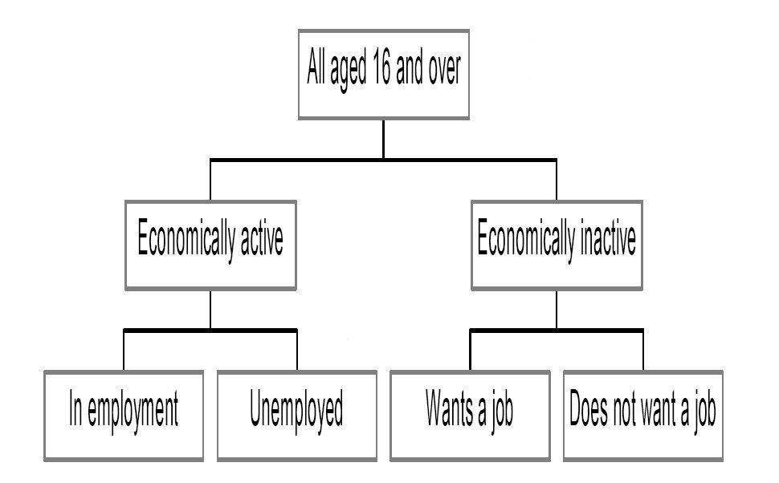

Chapter 7: The Emergence of the Work-As-Employment and State-As-Providers Norms
Source: Pages 112–134 of MintonThesis.pdf (September 2009). Text extracted from PDF; figures extracted directly as images.
7 The Emergence of the Work-As-Employment and State-AsProviders Norms 7.1 Introduction This chapter, the first chapter of the „evidence‟ section of this thesis, will consider the contemporary state, and historical origins, of „employment‟ and „unemployment‟ as bureaucratic, statistical categories. In doing so, it will to an extent sketch the creation of unemployment, and employment, as politically salient social entities, towards which political actions are directed, and through the statistical lens of which the citizens of the nation, and of the world, are observed and their actions interpreted by political actors. The chapter comprises two main sections, each taking conceptually orthogonal slices through the same underlying social phenomena. The first section will take a broadly cross-sectional slice through the issues, by presenting, reviewing, and then commenting upon a number of technical documents that describe contemporary national and international standards for the economic categorisation of people and their activities. The second section will take a broadly longitudinal slice through the same issues, presenting a standard account of the historical origins of „unemployment‟ as a politically salient and formally recorded social category, together with an unorthodox reading and interpretation of this account. The chapter will then conclude by offering a small number of conceptual devices or tools that I hope will be useful in interpreting the evidence presented, and highlighting their continuing relevance to the topics considered in later chapters.
7.2 A Cross-sectional Slice through Contemporary Economic Categorisation This section of the chapter will begin by reproducing, „as is‟, a number of passages, figures, and quotations from a range of dry, technical documents defining national and international standards of labour market categorisation. This material will form the evidence, the data, the object-for-analysis at the heart of this section. This analysis, an attempt to understand the sociological theories and assumptions underlying and promoted by these statistical categories, will be provided in the second half of this section. The reasons for this sub-division, and for beginning with a substantial tranche of largely unmediated quotation from the sorts of document that are not, usually, considered
interesting or exciting reading, have to an extent already been alluded to in chapter five – where I discussed the importance of „codes‟ and „written documents as authority figures‟ within bureaucratic (including political) structures – and in chapter six – where I suggested that a very broad range of interpersonal behaviours can be identified as having an economic function, and that if economic theories do not recognise the economic function (or even existence) of such behaviours, then they fail to properly understand the economy. I suggest that these documents - generally overlooked as dull, unimportant, mundane – constitute evidence that the theories of Weber and Tilly (in the case of chapter 5) and Fiske and Polanyi (in the case of chapter 6) can do much to illuminate. Furthermore, in presenting passages and descriptions of these documents in a largely unmediated and uninterpreted form, I hope to indicate how strong theoretical assumptions and political implications can become hidden and lost within technical minutiae.116
If the first part of this section appears somewhat overwhelming in
bureaucratic detail and categorical description, to the extent that it becomes difficult to see the wood for the trees (or the office for the paperwork), then that is partly the point. 7.2.1 Technical Documents as Evidence To begin this subsection, here is a passage from an Office for National Statistics publication introducing labour market categories, called „How exactly is unemployment measured?‟ The definition of unemployment is internationally agreed and recommended by the International Labour Organisation (ILO) - an agency of the United Nations. The Statistical Office of the European Union (Eurostat) and the Organisation for Economic Co-operation and Development (OECD) and other countries use this definition. Under the LFS guidelines,117 all people aged 16 and over can be classified into one of three [discrete] states: in employment; unemployed; or economically inactive.118
To an extent, this chapter’s approach is inspired and informed by that adopted within Bowker & Star’s book Sorting Things Out, which explores the theoretical assumptions underlying and societal consequences of systems of classification relating to race, disease, and medical practice. However, this chapter began before I had read or known about their book. (See Bowker, G. C. and S. L. Star (1999). Sorting Things Out: Classification and its Consequences. Cambridge, Massachusetts, The MIT Press.) Labour Force Survey.
The document continues: Unemployed people are: without a job, want a job, have actively sought work in the last 4 weeks and are available to start work in the next 2 weeks, or out of work, have found a job and are waiting to start it in the next 2 weeks. In general, anybody who carries out at least one hour‟s paid work in a week, or who is temporarily away from a job (e.g. on holiday) is in employment. Those who are out of work but do not meet the criteria of unemployment are economically inactive.119
The concept of economic activity is present throughout these definitions, as is the International Labour Organisation (ILO). The ILO attempts to standardise the definitions used by different nation states in measuring forms of labour activity, allowing cross-national comparison on a range of labour-based economic indicators. Unemployment is not measured directly, but estimated, from a sample of the population known as the Labour Force Survey.120 As the National Statistics publication states: “It is a legal requirement for every country in the European Union to conduct a Labour Force Survey.”121 Enforcing standards in classification schemes is thus an integral aspect of European international law. Chart A of this document, reproduced as

Figure 7.1 below, shows how the International Labour Organisation standards classify individuals:
ONS. (2007, September). “How exactly is unemployment measured?” Retrieved 6 November, 2007, from http://www.statistics.gov.uk/downloads/theme_labour/unemployment.pdf., p. 4, emphasis added Ibid., p. 4, emphasis added Ibid., p. 5 Ibid., p. 5
Figure 7.1 International Labour Organisation classifications Source: Chart A of ONS (2007), “How exactly is employment measured?”, accessed 1 September 2008, available at http://www.statistics.gov.uk/downloads/theme_labour/unemployment.pdf
The ILO categories presented here involve three stages of disjoint nesting. Firstly, all people are divided into two discrete subgroups: Those-aged-under-16, and Those-aged16-and-over; only the latter category of which is then considered of importance. Then, this latter group is subdivided into Those-economically-active, and Thoseeconomically-inactive. Those-economically-active are then further subdivided into Those-in-employment,
and
Those-who-are-unemployed.
Likewise,
Those-
economically-inactive are further divided into Those-who-want-a-job, and Those-whodo-not-want-a-job. The majority of further classification the Office for National Statistics conducts involves further subdividing one of these low-level subgroups, Those-in-employment. The ONS uses what it calls the Standard Occupational Classification 2000 (SOC2000). According to the ONS website, “The Standard Occupational classification was first published in 1990 to replace both the Classification of Occupations 1980 (CO80) and the Classification of Occupations and Dictionary of Occupational Titles (CODOT). SOC 1990 has been revised and updated to produce SOC2000.”122
www.ons.gov.uk. (2008). “About the Standard Occupational Classification 2000.” Retrieved 1 September, 2008, from http://www.ons.gov.uk/about-statistics/classifications/current/SOC2000/aboutsoc2000/index.html.
SOC2000 adds another 4 disjoint layers to those in employment: major groups, submajor groups, minor groups, and unit groups. “SOC2000 has nine major groups, 25 submajor groups, 81 minor groups and 353 unit groups.”123 The nine major groups are “defined in terms of the general nature of the qualifications, training and experience associated with competent performance of tasks in the occupations classified within”.124 They range from, at the bottom of the list, „Elementary Occupations‟: Occupations classified at this level will usually require a minimum general level of education (i.e. that which is provided by the end of the period of compulsory education). Some occupations at this level will also have short periods of workrelated training in areas such as health and safety, food hygiene, and customer service requirements.125 To, at the top of the list, „Managers and Senior Officials‟, who are defined as needing and possessing: A significant amount of knowledge and experience of the production processes and service requirements associated with the efficient functioning of organisations and businesses.126 As one may gather from these major group classifications, the ONS adopts assumptions about a hierarchy of occupational types, each requiring greater or lesser levels (as opposed to simply different types) of skill. The assumptions about skill levels are described explicitly near the start of the SOC2000 manual: [Occupations] are classified into groups according to the concept of „skill level‟ and „skill specialisation‟. As in SOC90, skill level is defined with respect to the „…duration of training and/or work experience recognised in the field of employment concerned as being normally required to pursue the occupation competently‟. (Employment Department Group/Office of Population Censuses and Surveys, 1990)
ONS. (2000). “Standard Occupational Classification 2000 Volume 1.” Retrieved 7 November, 2007, from http://www.statistics.gov.uk/methods_quality/ns_sec/downloads/SOC2000_Vol1_V5.pdf., p. 11 Ibid., p. 11 Ibid., p. 11 Ibid., p. 11
[…] Skill levels are approximated by the length of time deemed necessary for a person to become fully competent in the performance of the tasks associated with a job. This, in turn, is a function of the time taken to gain necessary formal qualifications or the required amount of work-based training. Apart from formal training and qualifications, some tasks require varying types of experience, possibly in other tasks, for competence to be acquired. Within the broad structure of the classification (major groups and sub-major groups) reference can be made to these four skill levels.127 The first, most rudimentary, of these skill levels is described as equating: [W]ith the competence associated with a general education, usually acquired by the time a person completes his/her compulsory education and signalled via a satisfactory set of school-leaving examination grades. Competent performance of jobs classified at this level will also involve knowledge of appropriate health and safety regulations and may require short periods of work-related training. Examples of occupations defined at this skill level within the SOC90 include postal workers, hotel porters, cleaners and catering assistants. 128 At the other end of the spectrum, the fourth skill level: [R]elates to what are termed „professional‟ occupations and managerial positions in corporate enterprises or national/local government. Occupations at this level normally require a degree or equivalent period of relevant work experience.129 All occupations, from „lowest‟ to „highest‟, exist with industries, and the ONS adopts a complementary classification system, the UK Standard Industrial Classification, or UKSIC, which classifies the industries employed persons are employed within. A Standard Industrial Classification (SIC) was first introduced into the United Kingdom in 1948 for use in classifying business establishments and other statistical units by the type of economic activity in which they are engaged. The classification provides a framework for the collection, tabulation, presentation and analysis of data and its use promotes uniformity. In addition, it can be used
Ibid., p. 4 Ibid., p. 5 Ibid., p. 5
for administrative purposes and by non-government bodies as a convenient way of classifying industrial activities into a common structure.130 Since its introduction in 1948, the classification has been revised in 1958, 1968, 1980, 1992, 1997, 2004, and 2007.131 In parallel with the UK-SIC, there also exists an International Standard Industrial Classification of All Economic Activities, or ISIC, which also began in 1948, and has been revised in 1958, 1968, 1989 and 2003132; as well as a European Communities standard known as Nomenclature générale des activités économiques dans les Communautés européennes, and usually abbreviated as NACE.133 In 1980, one of the principal objectives of the revision of the SIC was to examine and eliminate differences […] [between SIC and NACE:] […] the activity classification issued by the Statistical Office of the European Communities (Eurostat)[.] […] In 1990 […] the first revision of NACE was made by EC regulation and this presented a different set of circumstances.134 […] The NACE regulation […] made it obligatory on the UK to introduce a new Standard Industrial Classification, SIC(92), based on NACE Rev 1, and to use it where the UK is required to transmit to the European Commission statistics on economic activity.135 The NACE regulation gives effect to the wish of Eurostat to establish a common statistical classification of economic activities in order to promote comparability between national and Community classifications and, therefore, between national and Community statistics. … [A] new version of NACE, NACE Rev. 1.1, […] came into effect in January 2003. 136
ONS. (2007). “Introduction to UK Standard Industrial Classification of Economic Activities SIC(92).” Retrieved 25 November, 2007, from http://www.statistics.gov.uk/methods_quality/sic/default.asp., p. 4 Ibid., p. 4 Ibid., p. 4 Ibid., p. 4 Ibid., p. 5 135 Ibid., p. 5 136 Ibid., p. 5
Processes of enforced standardisation of statistical labour market categories, therefore, exist both within and between rich European nations. As with the ILO economic activity categorisations, and the SOC classifications, SIC adopts a multi-level, disjoint nesting structure: UK SIC(2003) is based exactly on NACE Rev.1.1 but, where it was thought necessary or helpful, a fifth digit has been added to form subclasses of the NACE Rev.1.1 four digit classes. Thus, UK SIC(2003) is a hierarchical five digit system [and] […] is divided into 17 sections, each denoted by a single letter from A to Q. Some sections are, in turn, divided into subsections (each denoted by the addition of a second letter). The letters of the sections or subsections can be uniquely defined by the next breakdown, the divisions (denoted by two digits). The divisions are then broken down into groups (3 digits), then into classes (4 digits) and, in several cases, again into subclasses (5 digits).137 Although it is often difficult to state, exactly and consistently, what different industrial groups do, both NACE and SIC require this assumption to be made: The main criteria applied in delineating groups and divisions of NACE concern the following characteristics of activities of production units: the character of the goods and services produced, the uses to which the goods and services are put and the inputs, the process, and the technology of production.138
The criteria concerning the manner in which activities are combined in, and allocated among, enterprises are central in the definition of classes (most detailed categories) of NACE. […] [T]he classes of NACE are defined so that the following two conditions are fulfilled whenever possible: a. The production of the category of goods and services which characterises a given class accounts for the bulk of the output of the units classified to that class;
137 138
Ibid., p. 5-6 Ibid., p. 15
b. The class contains the units which produce most of the category of goods and services which characterize it.139 An industry is an economic unit considered to produce activities: An economic activity takes place when resources such as capital goods, labour, manufacturing techniques or intermediary products are combined to produce specific goods or services. Thus, an economic activity is characterised by an input of resources, a production process and an output of products (goods or services).140 “In practice,” an associated document adds, “the majority of production units perform activities of a mixed character.”141 However, the requirement that all economic entities have a single industrial classification necessitates honouring and „enforcing‟ the assumption that the entities have a single, „principle activity‟. The principal activity is … ideally based on the value added although other criteria such as employment are often used in practice. The principal activity so identified does not necessarily account for 50% or more of the business‟ total value added.142 Value added, the document states, is “the difference between output and intermediate consumption,”143 and “is an additive measure of the contribution of each economic unit to Gross Domestic Product (GDP).”144 Value added is based on what is called the „relevant valuation concept‟: “gross value added at basic prices.”145 Gross value added at basic prices is defined as the difference between output at basic prices and intermediate consumption at purchaser‟s prices. Thus, value added at basic prices consists of other taxes on production, net compensation of
139
Ibid., p. 14 Ibid., p. 15, emphasis added 141 http://www.statistics.gov.uk/. (2007, ). “UK Standard Industrial Classification of Economic Activities 2007.” Retrieved 7 November, 2007, from http://www.statistics.gov.uk/methods_quality/sic/downloads/SIC2007explanatorynotes.pdf., p. 9 142 Ibid., p. 9 143 Ibid., p. 11 144 Ibid., p. 11 145 Ibid., p. 11 140
employees, consumption of fixed capital and an operating surplus balancing item.146 7.2.2 Analysis of Evidence The above excerpts and summaries of ONS documents hopefully provide a sufficient indication of the extent to which apparently objective measures of social phenomena depend upon layers upon layers of conventions, legally-enforced standards, and assumptions. The rigidity of the categorical divisions and the extent to which phenomena are considered unambiguous supersets and subsets of one another suggest an attempt to impose a kind of false certainty and definitiveness upon social phenomena which are inherently fuzzy and ambiguous. Furthermore, the choice of the particular taxonomies, elected to be deduced from social phenomena, suggests a strong belief in particular types of theories about social motivations, actions and purpose. It is natural, the theory underlying these legal and statistical conventions seems to suggest, that human beings should organise themselves within economic industrial units, which exist within clearly defined nation states, so that the economic industrial units may add value to goods and services by performing economic activities; this added value performs a service to the nation state, by bolstering its Gross Domestic Product. Individuals employed within economic industrial units, like the units themselves, are considered economically active. The nature of their activity is of great interest to national governments, because they are performing an inherently important function within modern competitive economies, and so are recorded and catalogued in fine grain detail (hence, for example, the 353 unit categories within the SOC2000). The same level of detail is not applied to those who are not economically active; presumably because, from this perspective, they are not as important. A corollary to the above is that some individuals are seen as more important than others, because the amount of „value‟ they are said to add to the national product is considered greater. In defining major occupational classifications by „skill levels‟, the SOC implies that „higher-skilled‟ occupations are of greater national importance, are more valuable, than „lower-skilled‟ occupations. Two observations about the occupational skill levels are worth making: firstly that „skill‟ is largely equated with „formal qualification‟; and secondly, that as the official skill level of the occupation rises, so the tangibility and 146
Ibid., p. 11
objective „existence‟ of the product the occupation‟s economic activity produces tends to decrease. Why are standards for categorising economic activities internationally enforced through organisations like the ILO and EuroStat? The simple answer seems to be that this allows direct comparability between nations. And the reason for this, I suggest, is because of the importance most modern rich nation states place on competing with one another – and, if one considers the importance placed on economic growth rates, with their past selves – on a small number of macroeconomic metrics. Perhaps, as with sport, commerce has become a substitute for war, a channel through which nation-states may compete and „fight‟ with one another for world superiority, without quite the same level of destruction, bloodshed, or civil disquiet that warfare proper would induce. National and international organisations that establish and enforce the categorisation standards for defining and measuring economic activity thus allow the metrics to be comparable between states, and so the game of Macroeconomics to be played on the world stage. There are at least two other reasons why these metrics may have become privileged in this way.
Firstly, as the metrics present point estimates, they provide a greater
semblance of objectivity (to anyone not trained in statistical inference) than if they presented interval metrics. (i.e. Official statistics tend to provide „an employment rate‟ and „an inflation rate‟, rather than „a range of possible employment rates‟ or „range of inflation rates‟, that follow from different, but equally valid, subjective decisions being applied in their construction.) Secondly, they facilitate the use of political „decisionrules‟, which reduce the extent to which politicians must involve themselves with more detailed minutiae of a situation before making a decision. Decision-rules (or simply „Rules‟ in the context of the describing Charles Tilly‟s „Codes‟ in chapter five) have the additional advantage of reducing the level of personal responsibility a politician has for the decisions she makes. If the decision a politician makes leads to adverse and unanticipated side-effects, then she may be seen as more personally culpable if the decision she made was idiosyncratic - due to her own, personal evaluation of the political situation – rather than the result of following standard, formalised assumptions about how societies operate. If she makes decisions based on standard, widely accepted decision-rules, however, the failure of actions to produce the desired and intended results can be attributed to the decision-rules themselves, rather than the individuals who implement them (although, conversely, a
shrewd politician will attribute successful outcomes, based on applying the same decision-rules, to her own volitions). 7.2.2.1 Unemployment and the Commodity Fiction With the above in mind, I will now return to the issue with which this chapter section began: unemployment. I noted that, according to the ILO, unemployment is considered a form of „economic activity‟. This categorisation may seem strange and counterintuitive, and so I will consider it now in more detail. As Karl Polanyi suggested in The Great Transformation, the social component of the industrial revolution involved re-interpreting people and places as the „fictional commodities‟ of „labour‟ and „land‟ respectively. As Polanyi puts it:
It is with the help of the commodity concept that the mechanism of the market is geared to the various elements of industrial life. Commodities are here empirically defined as objects produced for sale on the market; markets, again, are empirically defined as actual contacts between buyers and sellers. Accordingly, every element of industry is regarded as having been produced for sale, as then and then only will it be subject to the supply-and-demand mechanism interacting with price. In practice this means that there must be markets for every element of industry; that in these markets each of these elements is organised into a supply and demand group; and that each element has a price which interacts with demand and supply. These markets – and they are numberless – are interconnected and form One Big Market. The crucial point is this: labor, land, and money are essential elements of industry; they must also be organised in markets; in fact, these markets form an absolutely vital part of the economic system. But labor, land, and money are obviously not commodities, the postulate that anything bought and sold must have been produced for sale is emphatically untrue in regard to them. In other words, according to the empirical definition of a commodity they are not commodities. Labor is only another name for a human activity which goes with life itself, which in its turn is not produced for sale but for entirely different reasons, nor can that activity be detached from the rest of life, be stored or mobilized; land is only another name for nature, which is not produced by man; actual money, finally, is merely a token of purchasing power which, as a rule, is
not produced at all, but comes into being through the mechanism of banking or state finance. None of them is produced for sale. The commodity description of labor, land, and money is entirely fictitious.147 Consider this perspective with respect to the ONS definition stated earlier that value added is “the difference between output and intermediate consumption.”148 Given this definition of value added, and the re-interpretation of people as „labour‟, the higher the price of the labour-commodity, the greater the intermediate consumption costs of production, so the lower the value added by the economic activity to the gross domestic product. The fact that labour is not „ontologically‟ a commodity, in the sense of being an item produced for sale, makes labour economics, from an economic theory perspective, a fairly strange sub-discipline. For example, the Encyclopaedia Britannica article on „labour economics‟, which begins by defining it as the “study of the labour force as an element in the process of production”,149 writes that: The economist cannot study the capabilities, jobs, and earnings of men and women without taking account of psychology, social structures, cultures, and the activities of government [which] often play a more conspicuous part in the field of labour than do the market forces with which economic theory is mainly concerned. The most important reason for this arises from the peculiar nature of labour as a commodity. The act of hiring of labour, unlike that of hiring a machine, is necessary but not sufficient for the completion of work. Employees have to be motivated to work to an acceptable standard; the employment contract is, in effect, open-ended. This may be no problem when employees are weak and easily replaced, but the more skilled, organized, and indispensible they are, the more the care that must be given to creating an institutional setting that will win their compliance and meet their notions of fairness.150 The article continues:
147
Polanyi, K. (2001 [1957]). The Great Transformation: The Political and Economic Origins of Our Time. Boston, Beacon Press., p. 75 148 ONS. (2002). “UK Standard Industrial Classification of Economic Activites 2003.” Retrieved 7 November 2007, from http://www.statistics.gov.uk/methods_quality/sic/downloads/UK_SIC_Vol1(2003).pdf., p. 11 149 Brown, S. E. H. P. and W. A. Brown. (2006). “Labour Economics.” Retrieved 20 November, 2007, from Encyclopedaedia Britannica 2006 Ultimate Reference Suite DVD. 150 Ibid., emphasis added
A second major reason for looking beyond straightforward labour market forces is the often highly imperfect nature of the industrialized labour market. The majority of jobs are occupied by the same employees for many years, and only a small minority of employees quits their jobs in order to move to a comparable job that is better paid. [There exists] substantial variation in the level of pay offered for the same job by different firms in the same local labour market. This sluggishness of labour market response is particularly notable for more skilled labour […].151 These provisos notwithstanding, it remains evident – axiomatic, even – that labour, within this framework, is considered a commodity, albeit one with some unusual features. From this perspective market forces, such as the classical economic principles of supply and demand, can still usefully be applied to theorising about labour. So, from the ILO perspective, it makes sense to describe the unemployed as „economically active‟, as they are performing the economically useful activity of increasing labour supply surplus, thus reducing labour-commodity prices and so, ceteris paribus, the intermediate consumption costs of, and so value added by, industrial activity. However, It only makes sense to describe someone as a member of the economically active category of „unemployed‟, rather than some other, economically inactive category, if they are actively seeking work, as otherwise they are not presenting themselves to industries as surplus units of this (as is assumed to be) commensurable commodity. It is worth bearing this in mind when considering that the current state unemployment benefit is known as „Job-seekers Allowance‟ and is payable only on condition that claimants are „actively seeking work.‟ None of these concepts and ideas are original, and by reiterating them here I am not attempting to suggest otherwise. By stating them explicitly, however, my aim is primarily to highlight the extent to which social theories, that posit people as commodities in service of „One Big Market‟, are pervasive within statistical bureaucratic categories and integral aspects of the political doxa. Politically, the ultimate implications of the above theory – that unemployment should be kept high in order to keep wages low – are untenable. From a social ecology perspective 151
Ibid., emphasis
– relatively easy to describe qualitatively, but perhaps more difficult to model quantitatively – this perspective is also largely untenable, because the ceteris paribus assumption about the value of a good remaining constant when average consumer spending power is lower is generally not valid unless (as with some forms of international trade) the waged employees of an industry producing a type of good are never also the consumers of the good. As such, a broadly Keynesian argument may be applied against the implicit „encouragement‟ of unemployment as a means of keeping the value of the labour commodity in check, by recognising that the average net economic activity of the employed tends to be more than of the unemployed, as the greater purchasing power of the employed increases the value of products and services produced by industries more so than high employment fails to inhibit the price of the labour commodity and thus increases the costs of goods produced. Once the logic of state welfare measures is accepted, their symbiotic relationship to economic systems becomes a matter of great importance: to be „unemployed‟ has to be both a categorical state people are willing to enter, in order that there be „surplus labour‟ and the economy functions „efficiently‟, but at the same time it cannot be considered preferable to that of „employment‟, otherwise, by definition, the unemployed aren‟t really „unemployed‟, as they are not presenting themselves as a ready surplus commodity for use and consumption by industries. That being unemployed is overwhelmingly considered, within rich modern societies, to be an undesirable state, is evidenced in the political importance placed on reducing unemployment. This is despite the fact that, from a labour economics perspective, a significant surplus of labour –ready to do the work of the currently employed quickly and willingly, and without demanding any increase in pay or improvement in working conditions (part of the industry‟s „intermediate costs‟) – is theoretically desirable. Political organisations thus have a complex balance to make regarding how labour market statistics are operationalised as decision-rules. On the one hand, as commodities, it makes sense to have a significant surplus of labour so as to ensure the price of labour to economically active industries remains low; the proviso being that the cost of „storing‟ this surplus – i.e. in providing unemployment benefit- should not exceed the value added from suppressing marginal production costs, and this human capital stock should not be stored so long that it „spoils‟ (for example, by becoming too old and, relative to current skill demands, „out-of-date‟).
On the other hand, to satisfy voters, unemployment should be kept low because people, overwhelmingly, do not wish to be unemployed. As previous chapter has discussed, people, as social beings, have a very strong tendency to think in terms of „in-groups‟ and „out-groups‟, dyadic categorisations, as well as to employ the principle of reciprocation when thinking about issues of justice and fairness. To be unemployed is to be considered a „needy‟, „temporarily misfortunate‟ member of an abstract (but overwhelmingly still emotionally salient) national „in-group‟, who has presently been provided with necessary resources by more fortunate members of the community, but who recognises that such provisions are contingent upon future reciprocation – through work – during times of better fortune.
7.3 Longitudinal
Considerations:
The
Historical
Origins
of
Recorded Unemployment Having taking a cross-sectional slice through contemporary statistical definitions of employment and unemployment, I now want to take a longitudinal slice through these issues by considering how, and why, the state definition of „unemployment‟ came into existence and to be applied. To do this, I will draw my evidence primarily from W. R. Garside‟s book, The Measurement of Unemployment, but offer a somewhat unorthodox reading and interpretation of this evidence. Garside states that government figures for unemployment were first recorded in the UK towards the end of the Nineteenth century. “Returns showing the percentage of the total union membership unemployed at the end of each month were made monthly to the Board of Trade by a number of trade unions from 1888.”152 7.3.1 The Use of Union Records The choice, by agents of the government, to use union figures to assess unemployment makes sense when one considers the collective self-provisioning, and relative geographic and skills homogeneity, of unions at the time. Unions were, to an extent, self-selecting, new, primarily urban communities. Like other communities, notions of ingroup membership and reciprocal fairness arrangements helped ensure that, for each member, individual hardships could be dampened by communal provisions. These communal provisions involved paying into the union at times of surplus, so as to have union support at times of shortage. “A large number of trade unions in the engineering,
152
Garside, W. R. (1980). The Measurement of Unemployment: Methods and Sources in Great Britain 1850-1979. Oxford, Basil Blackwell., p. 10
shipbuilding, metal, printing, woodworking, building and other trades made payments of one sort or another to their unemployed numbers.”153 Though the Board of Trade first published estimates for overall unemployment in 1888, they had started collecting unemployment registers from unions a few decades earlier. In 1872, figures were collected for around 100,000 union members.154 “By 1914 the membership of the reporting unions had increased to 993,000. From 1900 to the outbreak of World War I it represented about one-quarter of the total membership of trade unions and other employees‟ associations in the United Kingdom.” 155 7.3.2 Historical Context and ‘General Employment’ Garside‟s book, in particular the first chapter,156 focuses on the issue of whether the general unemployment figures, collected by the Board of Trade from selected union accounts, represent an accurate measure of the „true‟ level of unemployment during the late Nineteenth and early Twentieth centuries. However, I suggest that this represents, to some extent, an application of a fairly contemporary mode of thinking to historically incomparable social circumstances. For members of any given union, comprising persons with a specific set of employable skills and living in a particular geographic area, the level of unemployment within their particular union was surely of more importance and meaning than a weighted average of unemployment rates collected from a large number of unions based at many locations within the country. A general unemployment rate, given that the government was not, at the time, also responsible for providing unemployment benefits for union members, would thus have been primarily a „statistical fiction‟, at best a way of crudely summarising general trends and levels recorded within a wide variety of diverse social situations. The national unemployment rate only began to acquire a more substantial social significance as the government began to take over the provisioning function of unions; just as unions were a way for geographically mobile non-kin to perform the provisioning function that the „organic‟ communities from which the labourers had emigrated had previously provided. Once the nation state became more involved in this form of hardship provisioning, so the requirement to record increasingly accurate and comprehensive figures for unemployment became a prime national accounting priority.
153
Ibid., p. 10 Ibid., p. 12 155 Ibid., p. 13 156 Ibid., pp. 9-28 154
As Garside writes: The extension of unemployment insurance after 1916 marked the beginning of a more comprehensive and detailed statistical treatment of unemployment. In July 1916 approximately 1.5 million workers […] were added to the 2.1 million or so persons already insured under the 1911 National Insurance Act.157 Of the many types of people engaged in paid, specialised labour, military personnel and civil servants may perhaps be considered those whose welfare needs are most directly the responsibility of the state. It thus makes sense that much of the early rise in directly recorded government unemployment figures was of ex-soldiers. During the period 1919 to 1920 considerable numbers of demobilized exservicemen and civilian workers, including juveniles over 15 and under 18, whose war work had come to an end were temporarily unemployed. Few had any rights to benefit under the insurance scheme so temporary arrangements were made for non-contributory benefits, known as Out-of-Work Donations, to be paid to them for limited periods.158 Once the principle and process by which the State begins to provision for a subset of its members, those who have performed particular deeds for the State considered worthy of positive reciprocation, this principle and process can be extended to other members of the nation. The largest expansion of the unemployment insurance scheme came in 1920 when it was applied to all persons of 16 years and over who were employed under a contract-of-service or apprenticeship and, if non manual workers, receiving remuneration not exceeding £250 a year.159 7.3.3 Centralisation and Adaptation The use of union-based employment estimates was seceded in 1926.160 Instead, the government moved to a system of estimates based on central bureaucratic documentation:
157
Ibid., p. 30 Ibid., p. 30 159 Ibid., p. 31 160 Ibid., p. 29 158
The basis of all insurance statistics is the total number of insured persons. Upon becoming unemployed insured persons in the inter-war period were required to lodge their unemployment books at an Employment Exchange in order to claim unemployment benefit and to seek fresh employment. To arrive at a percentage rate of unemployment it is necessary to know the total number of insured workpeople to which the unemployment figures relate. This number was estimated in July of each year from the annual issue of new unemployment books in exchange for those of the previous year‟s currency, classified by industry, sex, and locality.161 As more people became insured through the State, so there was a shift from local, union provisioning to central, nation state provisioning. Records of unemployment books lodged came to assume an accounting, monitoring function, allowing the State to „balance its own books‟. A consequence and requirement of this is that the State both came to manage the direct social security needs of increasing proportions of its citizens, and, through increasingly comprehensive book-keeping, came to monitor and, in an abstract sense, observe the yearly, monthly, and daily activities of its citizens. As well as monitoring its citizens‟ behaviour in this way, the State also came to proscribe citizens‟ activities to a greater extent than before. In the paragraph most recently quoted from Garside, for example, mention is made of „Employment Exchanges‟, whose two functions were to allow citizens to „claim unemployment benefit‟ and „seek fresh employment‟. Within a particular trade union, these two functions would have been coterminous: the only reason members of a union join it is because of their continual and active interest in a particular type of employment, „unemployment‟ within the union being simply the (generally unwanted) time between opportunities to ply one‟s chosen trade in exchange for money. It seems illustrative that state-based Employment Exchanges, in combining the two functions of unemploymentprovisioning and employment-seeking into the same building, adopted this same model from standard union practices. There are some issues, however, with extending this kind of practice to a general population. Unions emerged as self-selecting groups of people, all possessing a common set of vocation-specific abilities, generally fit and healthy, and actively seeking particular lines of employment. Any random sample of citizens of a nation-state, 161
Ibid., p. 33
however, even those within a given age bracket, cannot be assumed to have anywhere near this level of homogeneity and the domain-specific work-readiness of a random sample of members of a single trade union. Work-based assumptions that can be made about union members cannot, necessarily, be made with the same degree of confidence about the general population. State-run Employment Exchanges thus risked converting something based on a voluntary system of provisioning for persons choosing to engage in the formalised, monetary economy, into a set of materially „enforceable‟ proscriptions about how citizens, in general, should run their lives. The following passage from Garside may help to illustrate this: The fact that an unemployment book was lodged on a particular day at an Employment Exchange indicated that the person was not working on that day in an insured occupation. The only insured persons who might have refrained from lodging their books would be those who believed that they had no current prospects or future hope of obtaining either unemployment benefit or employment or who did not wish to make application for it. The potential number of such persons was reduced, however, by two factors. First many poor law authorities required as one of the conditions on which outdoor relief was given that an able-bodied applicant should maintain registration at an Employment Exchange. Second, by registering at an Exchange when unemployed persons after 1928 who were insured under the Health Insurance Scheme had their health card franked and thus avoided an accumulation of arrears of health insurance contributions.162 Thus, being able to secure the material requirements for an ongoing existence became increasingly conditional on following work-seeking practices that had, at the union level, been voluntary. With the move towards increasingly centralised, state-run provisioning, so increased the degree to which acquiring access to provisioning services became conditional on seeking employment within the formal, monetary economy.
7.4 Two Concepts: ‘Epistemic Poverty’ and ‘Gaming the System’ With the above discussions as points of reference, I will now introduce two concepts, two small theories, that I hope will both be useful in interpreting the evidence presented
162
Ibid., p. 35
so far, and their relevance to the more contemporary debates introduced in the next four chapters. 7.4.1 Epistemic Poverty By „epistemic poverty‟, I have in mind a relative dearth of knowledge about a given phenomenon. The qualifier „relative‟ suggests the concept must be involved in some form of comparative act, to distinguish in some way between two or more things. With this in mind, I suggest that an act of comparison be made between state-based and union-based provisioners of social security. Here I would suggest that State-based provisioners tend to be epistemologically impoverished, relative to union-based provisioners, about the circumstances and conditions under which the unemployed became unemployed: about their current circumstances, and about their future employment prospects. At the level of national decision-making and accounting, unemployment becomes reduced to a single dimension, and assumes a simple, binary categorical identity. It is this epistemologically impoverished reduction of the phenomena, this switching ontological dyad, which eventually caused the statistical indicator to be created, and that is utilised within much bureaucratic state-level (and even international) decision-making. 7.4.2 Gaming the System Once accounting metrics are established, they come to be relied upon by large bureaucracies to allow knowledge and information about local social circumstances to be transmitted centrally. Without such metrics, national governments would be largely blind to the circumstances which would lead to loss of structural integrity and eventual organisational collapse. Like an organism, a bureaucratic organisation relies on the transmission of information into more and less integrated decision-making centres, in order that it produces responses that help to maintain its general form and structure: its ongoing survival, as it were. In the case of unemployment benefit, the organisation‟s structural integrity is more severely compromised if the amount of resources leaving the structure greatly and persistently exceeds the amount entering the structure (just as an organism dies and decays if the amount of energy it acquires from consuming food greatly and persistently exceeds the amount expended in acquiring food). This means that, as the responsibility to provide resources for unemployed citizens increases, so does the requirement for
more comprehensive and complete information about the flows and magnitudes of resources acquired from, and by, these citizens. It is with the above in mind that the second concept – „gaming the system‟ – becomes relevant. As organisations increase in size and complexity, so individuals employed within them become, as Max Weber suggested, „functionaries‟, whose own integrity as components within the organisation – whose job security – depends increasingly in performing very specific information- and resource-transfer „functions‟. Unlike mechanical or electronic components, however, or internal organs within a biological organism, bureaucratic functionaries are generally intelligent, conscious, sentient beings. Aware that their „functional integrity‟ is more sound if some kinds of information and resources are transferred than others, people will generally attempt to send signals through the organisational structure that are most consonant to their continued and improved status as functionaries. The organisation, out of a desire to increase the integrity of its information- and resource-transfer systems, may attempt to establish more comprehensive internal monitoring procedures and systems – punch cards, double-entry bookkeeping, email logs, and so on – but such procedures consume valuable resources, as well as reduce the speed of information- and resource-transfer, and so the level of functionary monitoring will never be so comprehensive as to prevent functionaries from transmitting information which is more internally consonant, less honest and accurate. It is perhaps this organisational logic which at the root of the many observations which led Donald T. Campbell, a social science methodologist, to write that: Evaluation research […] is becoming a recognized tool for social decisionmaking. Certain social indicators […] have already achieved this status […] As regular parts of the political decision process, it seems useful to consider them as akin to voting in political elections […] From this enlarged perspective, which is suggested by qualitative sociological studies of how public statistics get created, I come to the following pessimistic laws […] : The more any quantitative social indicator is used for social decision-making, the more subject it will be to
corruption pressures and the more apt it will be to distort and corrupt the social processes it is intended to monitor.163
7.5 Concluding Remarks In this chapter, I have tried to take two broad, orthogonal swipes through labour market classification, centred around the concept and measurement of unemployment. In the cross-sectional swipe, I presented a brief summary of official labour market social classifications as they are presently defined and applied; in the longitudinal swipe, I drew upon a conventional account of the history of unemployment as a nationally measured and standardised metric. In both cases, I tried to draw meaning from the evidence, by presenting interpretations broadly consonant with many of the theories discussed in the previous five chapters. At the end of the chapter, by way of analysis of the longitudinal material, I briefly introduced, described, and applied two simple theories – „epistemic poverty‟ and „gaming the system‟ – that help to further reinforce the link between the broad theoretical frameworks presented in the previous chapters, and the empirical close readings offered in this chapter. In the introduction to this thesis, I described this chapter as being broadly about a „hundred year‟ topic. Broadly, given that the longitudinal story described in the second half of the chapter began in the late nineteenth century, this is correct, although the time-scales given are heuristic rather than precise, and simply intended to suggest that the materials covered in this chapter should be thought of as context or background material for those materials and issues discussed in chapter eight (the „thirty year‟ topic), which should themselves be thought of as context or background material for those materials and issues discussed, in much more depth, within chapters nine, ten, and eleven. (The „five year‟ topic.)
163
Campbell, D. T. (1976). Assessing the Impact of Planned Social Change. Dartmouth College, Harvard University Press., p. 49